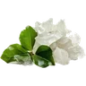
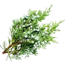

Correspondence Grimoire
Insect Repellent
Type
Oils19

Camphor Essential Oil
Virginian Cedarwood Essential OilInsect repellents are aromatic preparations that discourage biting and stinging insects, mosquitoes, gnats, flies, ticks, fleas, ants, and moths, through scent compounds the insects find unpleasant. Citrus, terpene-rich woods, and pungent herbaceous oils form an aromatic barrier on the skin and in the surrounding air, keeping insects at bay through warm months and in mosquito-prone environments.
Always dilute essential oils in a carrier before topical use and patch test before broader application. Bergamot is phototoxic; avoid sun and UV exposure for twelve to seventy-two hours after applying it to the skin. Avoid basil, camphor, cypress, lemon balm, and rosemary during pregnancy. Camphor should be avoided around children under five and by those with epilepsy or high blood pressure. Clove bud, lemongrass, and turpentine can irritate sensitive skin and should be well diluted; turpentine especially should be used sparingly. Keep all oils away from the eyes and mucous membranes.
Suggested Application of Oils
- Skin oil or lotion: Add 5 to 15 drops of essential oil per ounce of carrier (jojoba, sweet almond, or unscented lotion) and apply to exposed skin before going outdoors. Reapply every two to three hours.
- Vaporization: Diffuse 6 to 10 drops in an oil burner, electric diffuser, or candle lamp to scent a room and discourage insects. Outdoors, add to citronella candles, torches, or a personal diffuser.
Oils to Use as Insect Repellents
 Lemon Balm Essential Oil
Lemon Balm Essential Oil Basil Essential Oil
Basil Essential Oil Bergamot Essential Oil
Bergamot Essential Oil Borneol Essential Oil
Borneol Essential Oil- Camphor Essential Oil
- Virginian Cedarwood Essential Oil
 Citronella Essential Oil
Citronella Essential Oil Clove Essential Oil
Clove Essential Oil Cypress Essential Oil
Cypress Essential Oil Eucalyptus Essential Oil
Eucalyptus Essential Oil Lemon-Scented Eucalyptus Essential Oil
Lemon-Scented Eucalyptus Essential Oil Geranium Essential Oil
Geranium Essential Oil- Lavender Essential Oil
 Lemongrass Essential Oil
Lemongrass Essential Oil May Chang Essential Oil
May Chang Essential Oil Mastic Essential Oil
Mastic Essential Oil Patchouli Essential Oil
Patchouli Essential Oil Rosemary Essential Oil
Rosemary Essential Oil Turpentine Essential Oil
Turpentine Essential Oil